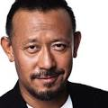
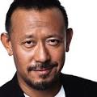

CINE COLOMBIA

Galen Erso (Mads Mikkelsen) vive junto a su esposa Lyra (Valene Kane) y su hija Jyn en el planeta remoto Lah'mu. Un día aterriza el director imperial Orson Krennic (Ben Mendelsohn) con su tropa e intenta, por la fuerza, hacer que Galen, que en el pasado fue un eminente científico, trabaje nuevamente para el Imperio en la construcción de una nueva arma secreta. Pese a las indicaciones de Galen de huir del lugar, su esposa Lyra intenta defenderlo y logra herir al oficial Krennic, pero ella resulta muerta en esta maniobra. Jyn logra esconderse en una cueva y es rescatada luego por Saw Gerrera (Forest Whitaker), un prominente luchador rebelde. Galen, su padre, es obligado a unirse nuevamente al Imperio para colaborar en la construcción de una nueva arma. Trece años más tarde, Bodhi Rook (Riz Ahmed), un piloto que desertó del Imperio, logra filtrar un mensaje en forma de holograma, en el cual el científico Galen habla de una nueva super-arma del Imperio (la Estrella de la Muerte) que está siendo construida. Saw Gerrera llega a conocer este mensaje, pero cree que Bodhi es un espía imperial y trabaja como un doble agente

 
